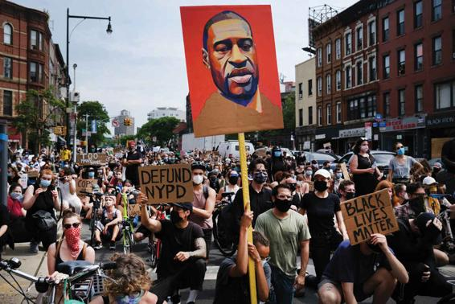
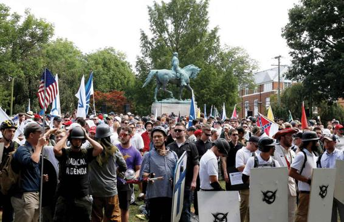

Some people see racism as a system of domination operating in official social institutions like admissions offices or police departments, while others see it as operating through the actions of racist individuals. In this section, we detail several particular concepts that are important for understanding racism in the United States today: color-blind racism, White privilege, institutional racism, overt racism, and microaggressions.
Color-Blind Racism: Racism without Racists
Over the past several decades, some sociologists have argued that racial inequality is maintained less by overt acts of racial hatred than by color blindness itself. Sociologist Eduardo Bonilla-Silva (2006) defines color blindness as a means of maintaining racial inequality without appearing racist.
First, many Whites believe they are above racism and incapable of perpetuating discrimination. They are thus unaware of the ways in which their insensitivity is psychologically damaging to racial minorities. Second, by attempting to act as if race does not exist, they perpetuate inequalities that can only be addressed by explicit attention to racial differences. Third, many Whites who do make subtle or even explicitly racial distinctions have become adept at maintaining an appearance of neutrality. In all of these ways, much of racial inequality is maintained through the appearance of color-blind processes.
White Privilege One significant aspect of color blindness is how much Whites can take for granted. Many of those who profess to be “color-blind,” for example, don’t recognize the many ways that they benefit from their Whiteness. Just as many Blacks must take it for granted that racism pervades all actions in a systemic way, so it is that many Whites can take for granted that they will benefit from White privilege. White privilege refers to the unacknowledged and unearned assets that benefit Whites in their everyday lives. It manifests itself in the most taken-for-granted conditions of everyday life.
In a powerful metaphor, women’s studies scholar Peggy McIntosh likens White privilege to “an invisible weightless knapsack of special provisions, assurances, tools, maps, guides, codebooks, passports, visas, clothes, compass, emergency gear, and blank checks” (1988). McIntosh then goes on to unpack this invisible knapsack by detailing more than 40 “special circumstances and provisions” she experiences as a White person that her African American counterparts cannot similarly expect in their day-to-day lives:
Make arrangements to hang out with people of one’s own race most of the time.
Rent or purchase housing in an area one can afford and where one wants to live.
Assume that the people living next door will treat one with respect.
Go shopping alone without being followed around the store or harassed.
Turn on the TV and expect to see other people of one’s race most of the time (1988).
Institutional Racism
The idea of institutional racism was developed in the United States in the late 1960s by Black Power activists Stokely Carmichael and Charles Hamilton before it was taken up and developed by sociologists in the 1970s. It is defined as the idea that racism occurs through the respected and established institutions of society rather than through the hateful actions of some bad people—that racism pervades all of society’s structures in a systematic way. Those who focus on institutional racism study how social institutions, such as schools, hospitals, police departments, and businesses, have practices supporting White supremacy built into the very fabric of their operations. These institutions structure social relations in ways that are less obvious than overt discrimination.
The concept of institutional racism is well illustrated by the case of George Floyd. His death at the hands of a police officer on May 26, 2020, led to massive protests, riots, and calls for justice and police reform not only in Minneapolis, the site of the incident, but across the United States and even the world. The tragedy occurred after Floyd, a 46-year-old African American and frequent patron of Cup Foods, a local grocery store, paid for cigarettes with what was allegedly a fake twenty-dollar bill. Realizing that the bill was counterfeit, the cashier on duty followed him to his car and demanded that he return the cigarettes. Floyd, who was heavily intoxicated, refused, and the employee called 911. When the first police car arrived seven minutes later, Floyd was still outside the store, sitting in his blue van with two other passengers.
Upon reaching the car, one of the officers put a gun to Floyd’s head until he lay both hands on the car’s steering wheel. The officer then pulled Floyd out of his car and met with some resistance as he was handcuffing him. Once the officer explained to Floyd that he was arresting him for possible counterfeit, Floyd became compliant. On their way to the police car, however, Floyd stiffened up and fell, claiming to be claustrophobic. At this point, two additional officers showed up at the scene and helped force Floyd into the car. Videos made by witnesses then show one of the newly arrived officers, Derek Chauvin, dragging a handcuffed Floyd out of the passenger seat and back on the ground, belly down. At 8:19 pm Chauvin set his knee over Floyd’s head and neck while two other officers held his back and legs, while the fourth one, Thomas Lane, watched.
Hundreds of Brooklyn residents gathered downtown to protest the killing of George Floyd by a Minneapolis police officer. Over 2,000 American cities joined in protest in the weeks following Floyd’s murder.
Though Floyd repeatedly cried out “please!” “Mama!” and “I can’t breathe,” the officers replied that he was “talking fine.” When several minutes had passed, Lane suggested to Chauvin that Floyd be turned on his side because he was concerned about “excited delirium,” a term used to designate “a sudden cessation of struggle, respiratory arrest, and death.” To this, Chauvin replied, “That’s why we have him on his stomach.” By 8:24 pm, George had stopped moving; a minute later he stopped speaking, at which point one of the cops holding Floyd down checked his pulse but “couldn’t find one.” Nonetheless, Chauvin kept his knee in place for nearly another two minutes. Eventually an ambulance arrived, and Floyd’s body was removed. An hour later he was pronounced dead at the Hennepin County Medical Center.
The autopsy report issued by the Hennepin County medical examiner on the following day stated that the findings did not support “a diagnosis of traumatic asphyxia or strangulation.” The complaint filed by the district court concluded that the combined effects of Floyd’s “being restrained by the police, his underlying health conditions, and any potential intoxicants in his system [had] likely contributed to his death.” It also noted, however, that “police are trained that this type of restraint with a subject in a prone position is inherently dangerous.”
A second, independent autopsy report ordered by Floyd’s family claimed that he had been asphyxiated by the pressure applied on his neck. Although both reports ultimately identified the cause of death as homicide, the one issued by the official medical examiner implied that Floyd may not have died at the hands of the police had he been in better medical shape.
Although Chauvin and all three fellow police officers will be prosecuted, the weight of their penalty will be determined by the way in which the jury chooses to understand the cause of Floyd’s death and define “excessive force.” As law enforcement officers, they may well receive a lighter sentence than civilians guilty of a similar crime. Data consistently shows not only that Blacks are far more likely to be maltreated by police, but that the public actually perceives this to be the case. Even though the murder of George Floyd was the direct result of the acts of a few police officers, the episode is unfortunately far from unique. Several other high-profile incidents in recent years have brought attention to inequalities in policing and a criminal justice system that places an unjust burden on Black people.
What we can see in George Floyd’s killing and others like it is that discrimination often occurs through the practices of respected institutions. We find this not only in policing, but in other institutions as well. One of the best ways to understand how race and ethnicity operate in the United States through institutional racism is to recall that, until the late 1970s, most Black Americans lived in either urban ghettos or southern states that were still marked by the remnants of Jim Crow segregation. In the urban areas marked by ghettos, it was very difficult for Blacks to find housing outside these neighborhoods, either due to racial discrimination or violence against those Blacks who tried to move into White neighborhoods. In the South, long after the Civil War, there was still a sharp “color line” that separated the races in schools, housing, and public facilities. In both the North and the South, Blacks of all socioeconomic classes led lives that were separate from Whites. Black Americans in the middle- and upper-classes were relegated to the same neighborhoods as those in the lower-class. In other words, if you were Black then you were Black, and that largely defined your life chances.
When we refer to the ghetto of the United States, or to southern Jim Crow, we are recognizing that racism is embedded in the structures of our political, economic, and social institutions. Even though there are many individual acts of discrimination, the racial system is not first and foremost kept alive by these individual acts. It is kept alive and perpetuated by a larger system of segregation that was established long before those currently affected were even born and that exists independently of individual acts of hatred or prejudice. In fact, once people live in a highly segregated society, it is possible for them to suffer great disadvantage based on their race without ever personally experiencing discrimination on a one-to-one basis.
Although an individual act, George Floyd’s murder brought attention to systemic inequalities and discrimination that exist on an institutional level, and it resulted in an outpouring of protests in cities around the world. The impact of these protests was not merely to bring attention to institutional racism in the criminal justice system, but in all realms of life including education, housing, and the workplace. Indeed, the murder of George Floyd had the effect of taking a concept developed in the discipline of sociology and making it a part of mainstream discourse about racial inequality around the world.
Overt Racism: Racism with Racists
Though color-blind racism and White privilege are useful concepts for explaining racial inequality in an age when people are good at keeping their racist thoughts to themselves, it would be a mistake to conclude that overt racist acts have disappeared or that large numbers of people are not victimized by them. In everyday life, racism can be expressed in the ideas held by bigoted individuals. It is expressed overtly through individual attitudes, perceptions, and beliefs, and it is also sustained by the ideological racist statements of political leaders.
Overt racism, which was highly unusual in American politics after the Civil Rights era, saw a resurgence during the campaign and 2016–2020 term of President Donald Trump, as is evident from the examples below.
Trump began his presidential campaign on June 16, 2015, by attacking Mexican migrants to the United States as “rapists and criminals,” saying, “When Mexico sends its people, they’re not sending their best. They’re not sending you. They’re sending people that have lots of problems, and they’re bringing those problems with [them]. They’re bringing drugs. They’re bringing crime. They’re rapists. And some, I assume, are good people.” Trump’s rhetoric was aimed at painting Mexicans with one broad brush and suggesting that most of the migrants were dangerous. These claims were the basis of his arguments for building a giant border wall between the United States and Mexico.
Trump’s attacks were focused not only on poor Mexican immigrants but also members of the Mexican American elite. In May 2016, Trump attacked Judge Gonzalo Curiel, who had ruled against his company on some legal issues. “He is a Mexican,” Trump said. “We’re building a wall between here and Mexico. The answer is, he is giving us very unfair rulings—rulings that people can’t even believe.”
In August 2017, members of the White nationalist groups participated in a “Unite the Right” rally in Charlottesville, Virginia. The rally, which was met by counterprotesters, erupted in violence and ended with one woman dead and nineteen others injured.
After the Democratic National Convention, Donald Trump attacked Khizr and Ghazala Khan, the Pakistani American parents of a Muslim U.S. Army officer who died in the Iraq War. The parents spoke at the Democratic Convention, accusing Trump of not understanding the U.S. Constitution: “Have you ever been to Arlington Cemetery? Go look at the graves of brave patriots who died defending the United States of America,” said the soldier’s father. “You will see all faiths, genders, and ethnicities. You have sacrificed nothing—and no one.” Later Trump lashed out at the couple, suggesting that Mrs. Khan had been silent during the speech because Pakistani women are held in an inferior position. Trump’s adviser Roger Stone claimed that Khizr Khan wants to enact sharia law in the United States.
Trump refused to disavow White supremacists when they made complimentary comments about him and his campaign. David Duke, the former leader of the KKK, stated on his radio show that not voting for Trump is “really treason to your heritage.” After a “Unite the Right” rally in Charlottesville, Virginia, in August 2017 left one woman dead and nineteen others injured, Trump again failed to condemn White supremacists, instead asserting that the counterprotesters were as much to blame for the violence as the alt-right crowd.
Although President Trump claimed to be “the least racist person that you have ever met,” he has continually made one bigoted statement after another, both during the campaign and then during his presidency. Usually these statements tended to paint one or another racial group with a broad brush.
Racial Microaggressions
In everyday life, racial minorities often experience brief interactions that send demeaning messages and appear to the victims to be based on their race. Unlike acts of overt racism, these interactions are perpetuated by Whites who are well meaning and well intentioned. Whereas the racial minority member experiences the interaction as an insult, the White perpetrator can be shocked to discover there has been any incident at all. At times, the perpetrator will claim that the minority has misunderstood an “innocent” comment or is making a “mountain out of a molehill.” Often these interactions are experienced silently, with the victim never expressing the outrage they silently feel.
The idea of microaggression was originally proposed in the 1970s by Chester M. Pierce, an African American psychiatrist at Harvard (Pierce and Dimsdale, 1986). In recent years, it has caught on due to the further work of Derald Wing Sue, an Asian American psychologist at Columbia. Racial microaggressions are small slights, indignities, or acts of disrespect that are hurtful to people of color, even though they are often perpetrated by well-meaning Whites. Among the kinds of incidents cited by Sue as examples of microaggressions are people asking Asian Americans where they were born or telling them that they “speak good English.” Such comments suggest that these Americans are immigrants, even when they and their families have been in this country for generations (Sue, 2010).
While the idea of microaggression has become very popular, it has also been widely criticized. Some believe the idea of microaggression is itself damaging because it encourages a victim mentality, spurs anger, and encourages people to jump to negative conclusions in ambiguous situations. As such, the debate over microaggression has become part of the phenomenon itself, an essential component to thinking about the phenomenon of racism in contemporary society.
Table 11.1APPLYING SOCIOLOGY TO RACE AND ETHNICITY
CONCEPT
APPROACH TO RACE AND ETHNICITY
CURRENT APPLICATION
White Privilege
Unacknowledged and unmerited assets that benefit Whites in their everyday lives.
Whites can typically expect to go shopping without being followed around a store or harassed.
Institutional Racism
Racism that occurs under the auspices of respected civic and social institutions such as courts and police, rather than through the hateful or biased actions of particular prejudiced people.
Police stopping and searching Black drivers at stop signs twice as often as they do White ones, though Blacks are 26 percent less likely to be found in possession of contraband goods.
Overt Racism
Racism that is manifest in individual attitudes, perceptions, and beliefs, including statements made by political leaders.
Donald Trump initiating his 2016 presidential campaign with the accusation that Mexican migrants to the United States are “rapists and criminals.”
Racial Microaggressions
Subtle, slight indignities and disrespectful actions that are hurtful to people of another race even though they are often perpetrated by well-meaning individuals.
Asking members of ethnic and racial minority groups where they are born under the assumption that they and their families have not been in the United States for long.
CONCEPT CHECKS
In what ways does the killing of George Floyd at the hands of a Minneapolis police officer provide evidence of institutional racism?
How does color blindness maintain racial inequality?
Provide one example of White privilege. What does McIntosh mean by “an invisible weightless knapsack”?
What is microaggression? Why is this idea problematic to some?